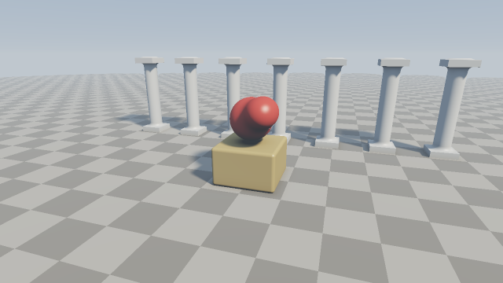

第 8 章 実践：シーンを組み立てる
この章では、第 3 章から第 7 章までの要素をすべて組み合わせて、1 つのシーンを完成させる。新しい技法は登場しないので、各要素がどのようにつながっているかに注目して読んでほしい。
完成イメージ

08_scene.frag の実行結果
08_scene.frag をダウンロード ｜ ブラウザーで実行
シーンは、床、台座、台座の上で形を変え続ける物体（以降「ブロブ」と呼ぶ）、奥に並ぶ柱で構成する。カメラはシーンのまわりを周回し、マウスでも操作できる。
シーンの設計
各物体に使う形状と技法を次の表にまとめる。
物体 |
形状と技法 |
マテリアル ID |
関連する章 |
|---|---|---|---|
床 |
平面、市松模様 |
|
第 3 章、第 5 章 |
台座 |
角丸の箱 |
|
第 3 章 |
ブロブ |
3 つの球の smooth min、時間による移動 |
|
第 4 章 |
柱 |
円柱と 2 つの箱の smooth min、有限回の繰り返し |
|
第 3 章、第 4 章 |
1 ピクセルの色が決まるまでの処理の流れは、次のとおりである。
mainImage: カメラの位置を決め、サブピクセルごとにレイを作る（第 2 章、第 7 章）。render: レイマーチングで交点を求め、陰影を付け、フォグを掛ける（第 2 章、第 7 章）。raymarch: シーンの SDFmapを使ってスフィアトレーシングを行う（第 2 章）。shade: 法線、ソフトシャドウ、AO を求め、照明を計算する（第 5 章、第 6 章）。mainImage: トーンマッピングを施して平均し、ガンマ補正を施して出力する（第 5 章、第 7 章）。
形状の定義
ブロブ
ブロブは、中心の球のまわりを 2 つの小さな球が異なる周期で回るようにし、それらを smooth min でつないだものである。2 つの球が中心の球に近づいたり離れたりするたびに、全体の形が滑らかに変化する。
70// 台座の上で形を変え続ける物体
71float sdBlob(vec3 p)
72{
73 float t = iTime;
74 float body = sdSphere(p - vec3(0.0, 1.6, 0.0), 0.55);
75 vec3 c1 = vec3(0.75 * cos(t), 1.6 + 0.3 * sin(2.0 * t), 0.75 * sin(t));
76 vec3 c2 = vec3(0.6 * cos(-1.3 * t + 2.0), 1.9, 0.6 * sin(-1.3 * t + 2.0));
77 float d = smin(body, sdSphere(p - c1, 0.3), 0.4);
78 return smin(d, sdSphere(p - c2, 0.25), 0.4);
79}
柱
柱は、円柱の上下に薄い箱（柱礎と柱頭）を置いたものである。円柱と箱のつなぎ目を smooth min で滑らかにし、石を削り出したような形にしている。
81// 柱: 円柱の上下に箱を載せ、滑らかにつなぐ
82float sdPillar(vec3 p)
83{
84 float shaft = sdCylinder(p - vec3(0.0, 1.5, 0.0), 0.25, 1.5);
85 float base = sdBox(p - vec3(0.0, 0.1, 0.0), vec3(0.4, 0.1, 0.4));
86 float capital = sdBox(p - vec3(0.0, 2.9, 0.0), vec3(0.4, 0.1, 0.4));
87 return smin(shaft, min(base, capital), 0.15);
88}
シーン全体
シーン全体の SDF では、各物体の距離とマテリアル ID の組を opU で合成する。柱は、第 4 章で示した有限回の繰り返しを使い、\(x\) 方向に間隔 1.8 で 7 本並べている。柱は 1 本分の SDF しか評価しないので、本数を増やしても計算量は変わらない。
60const float MAT_GROUND = 1.0;
61const float MAT_PEDESTAL = 2.0;
62const float MAT_BLOB = 3.0;
63const float MAT_PILLAR = 4.0;
64
65vec2 opU(vec2 a, vec2 b)
66{
67 return (a.x < b.x) ? a : b;
68}
69
70// 台座の上で形を変え続ける物体
71float sdBlob(vec3 p)
72{
73 float t = iTime;
74 float body = sdSphere(p - vec3(0.0, 1.6, 0.0), 0.55);
75 vec3 c1 = vec3(0.75 * cos(t), 1.6 + 0.3 * sin(2.0 * t), 0.75 * sin(t));
76 vec3 c2 = vec3(0.6 * cos(-1.3 * t + 2.0), 1.9, 0.6 * sin(-1.3 * t + 2.0));
77 float d = smin(body, sdSphere(p - c1, 0.3), 0.4);
78 return smin(d, sdSphere(p - c2, 0.25), 0.4);
79}
80
81// 柱: 円柱の上下に箱を載せ、滑らかにつなぐ
82float sdPillar(vec3 p)
83{
84 float shaft = sdCylinder(p - vec3(0.0, 1.5, 0.0), 0.25, 1.5);
85 float base = sdBox(p - vec3(0.0, 0.1, 0.0), vec3(0.4, 0.1, 0.4));
86 float capital = sdBox(p - vec3(0.0, 2.9, 0.0), vec3(0.4, 0.1, 0.4));
87 return smin(shaft, min(base, capital), 0.15);
88}
89
90vec2 map(vec3 p)
91{
92 vec2 res = vec2(sdPlane(p, 0.0), MAT_GROUND);
93 float pedestal = sdRoundBox(p - vec3(0.0, 0.5, 0.0), vec3(0.8, 0.5, 0.8),
94 0.08);
95 res = opU(res, vec2(pedestal, MAT_PEDESTAL));
96 res = opU(res, vec2(sdBlob(p), MAT_BLOB));
97 // 柱を奥に 7 本並べる
98 vec3 q = opRepeatLimitedX(p - vec3(0.0, 0.0, -3.5), 1.8, 3.0);
99 res = opU(res, vec2(sdPillar(q), MAT_PILLAR));
100 return res;
101}
マテリアル
マテリアル ID ごとのアルベドは、関数 albedoOf で決める。床の市松模様は、座標の整数部の和の偶奇で 2 色を切り替えて作る。
133// マテリアル ID から拡散反射率 (アルベド) を決める
134vec3 albedoOf(float mat, vec3 p)
135{
136 if (mat == MAT_GROUND) {
137 float checker = mod(floor(p.x) + floor(p.z), 2.0);
138 return mix(vec3(0.3, 0.28, 0.25), vec3(0.5, 0.47, 0.42), checker);
139 }
140 if (mat == MAT_PEDESTAL) {
141 return vec3(0.6, 0.45, 0.2);
142 }
143 if (mat == MAT_BLOB) {
144 return vec3(0.75, 0.1, 0.08);
145 }
146 return vec3(0.8, 0.8, 0.78);
147}
照明
照明は、第 6 章の 06_ao.frag と同じ構成である。拡散反射と鏡面反射にはソフトシャドウを、天空光には AO を掛ける。ブロブのつやを強調するため、鏡面反射の指数と強さを少し大きくしている。
218vec3 shade(vec3 p, vec3 rd, float mat)
219{
220 vec3 n = calcNormal(p);
221 vec3 v = -rd;
222 vec3 h = normalize(LIGHT_DIR + v);
223 vec3 albedo = albedoOf(mat, p);
224
225 float shadow = softShadow(p + n * 0.01, LIGHT_DIR, 0.01, 20.0, 8.0);
226 float occ = calcAO(p, n);
227
228 float diffuse = max(dot(n, LIGHT_DIR), 0.0) * shadow;
229 float specular = pow(max(dot(n, h), 0.0), 48.0) * diffuse;
230 float sky = (0.5 + 0.5 * n.y) * occ;
231
232 vec3 col = albedo * (SUN_COLOR * diffuse + SKY_COLOR * sky);
233 col += SUN_COLOR * specular * 0.6;
234 return col;
235}
カメラと仕上げ
カメラ、空、フォグ、トーンマッピング、アンチエイリアスは、第 7 章の 07_camera.frag と同じである。カメラの周回の半径と注視点の高さだけを、このシーンに合わせて変更している。
248// 1 本のレイの色を求める (トーンマッピング前の線形な値)
249vec3 render(vec3 ro, vec3 rd)
250{
251 vec2 hit = raymarch(ro, rd);
252 if (hit.y < 0.0) {
253 return skyColor(rd);
254 }
255 vec3 col = shade(ro + hit.x * rd, rd, hit.y);
256 return applyFog(col, rd, hit.x);
257}
258
259void mainImage(out vec4 fragColor, in vec2 fragCoord)
260{
261 // カメラは注視点のまわりを周回する。マウスでドラッグすると視点を操作できる
262 float angle = 0.3 * iTime;
263 float height = 2.2;
264 if (iMouse.z > 0.0) {
265 angle = 6.2832 * iMouse.x / iResolution.x;
266 height = 0.5 + 6.0 * iMouse.y / iResolution.y;
267 }
268 vec3 ta = vec3(0.0, 1.0, 0.0);
269 vec3 ro = ta + vec3(7.0 * sin(angle), height, 7.0 * cos(angle));
270 mat3 cam = setCamera(ro, ta);
271
272 // AA x AA 個のサブピクセルで色を求めて平均する (スーパーサンプリング)
273 vec3 col = vec3(0.0);
274 for (int m = 0; m < AA; m++) {
275 for (int n = 0; n < AA; n++) {
276 vec2 offset = (vec2(m, n) + 0.5) / float(AA) - 0.5;
277 vec2 p = (2.0 * (fragCoord + offset) - iResolution.xy) /
278 iResolution.y;
279 vec3 rd = cam * normalize(vec3(p, 2.0));
280 col += toneMapACES(render(ro, rd));
281 }
282 }
283 col /= float(AA * AA);
284
285 col = pow(col, vec3(1.0 / 2.2));
286 fragColor = vec4(col, 1.0);
287}
サンプルの改造
このサンプルを土台にして、次のような改造を試すとよい。
ブロブに第 4 章の変位を加え、表面を波打たせる。
柱の本数や間隔を変え、\(z\) 方向にも並べて列柱の回廊にする。
光源の方向
LIGHT_DIRを時間で変化させ、夕方の太陽のような低い角度から照らす。第 9 章のデバッグ表示を組み込み、反復回数が多い場所を調べる。
コード全体は 付録 A サンプルコード一覧 に掲載している。